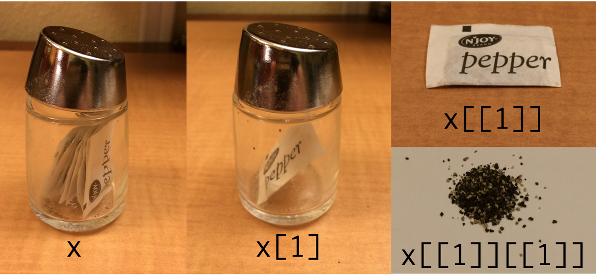

6 Работа со списками
6.1 Что такое списки?
Мы обсуждали в разделе @ref{list} тип данных список, и все особенности их синтаксиса:
## $l
## [1] "a"
##
## $m
## [1] 2 4
##
## $n
## [1] "blue" "green" "red"## [1] "a"## $l
## [1] "a"## [1] 2 4## [1] 4
Списки вне R обычно хранят в файлах типа .json (по-английски говорят с ударением на первый слог, а вот по-русски прижился вариант с ударением на второй слог: джейсо́н). Самое важное, что нужно знать, про .json, это то, что там могут хранится:
- пары ключ и значение, заключенные в фигурные скобки
{"ключ":"значение"} - упорядочные множества значений, заключенные в квадратные скобки
["значение_1","значение_2",...] - некоторые другие типы данных
Чтение и запись .json файлов осуществляется при помощи пакета jsonlite (не входит в tidyverse). Для примера скачаем датасет 30 героев Игры престолов, который Дж. Р. Р. Мартин достал с ресурса An API of Ice And Fire.
library(jsonlite)
got_chars <- read_json("https://raw.githubusercontent.com/agricolamz/DS_for_DH/master/data/got_chars.json")По аналогии с другими функциями в R, пакет jsonlite позволяет записывать .json файлы:
Просмоторщик списков встроен в RStudio. Его можно увидеть, если ткнуть в объект в R или написать команду View(got_chars). Альтернативой может стать функция jsonedit() из пакета listviewer.
6.2 Пакет purrr
В tidyverse встроен пакет purrr, который среди прочего позволяет работать со списками.
## [[1]]
## [[1]][[1]]
## [1] "Theon Greyjoy"
##
##
## [[2]]
## [[2]][[1]]
## [1] "Tyrion Lannister"
##
##
## [[3]]
## [[3]][[1]]
## [1] "Victarion Greyjoy"
##
##
## [[4]]
## [[4]][[1]]
## [1] "Will"
##
##
## [[5]]
## [[5]][[1]]
## [1] "Areo Hotah"
##
##
## [[6]]
## [[6]][[1]]
## [1] "Chett"
##
##
## [[7]]
## [[7]][[1]]
## [1] "Cressen"
##
##
## [[8]]
## [[8]][[1]]
## [1] "Arianne Martell"
##
##
## [[9]]
## [[9]][[1]]
## [1] "Daenerys Targaryen"
##
##
## [[10]]
## [[10]][[1]]
## [1] "Davos Seaworth"